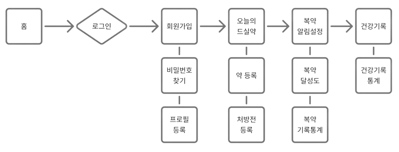
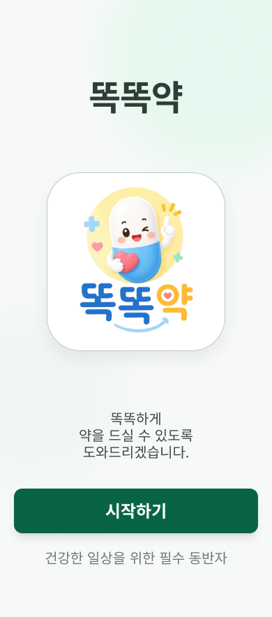
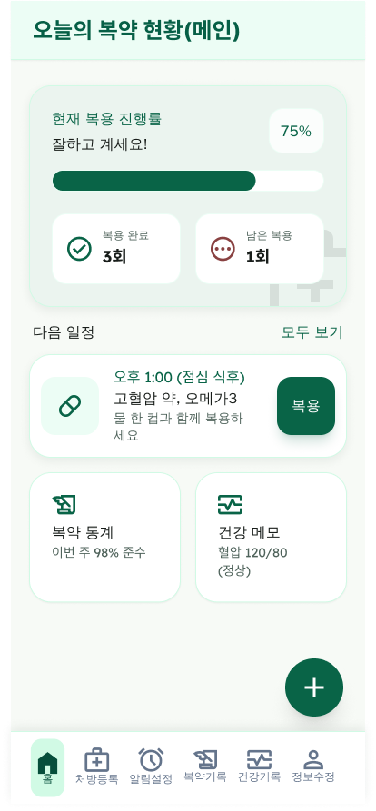
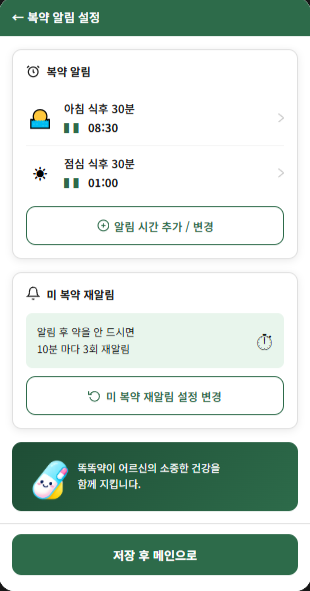

매일 먹어야 하는 약의 종류와 양이 점점 늘어간다. 하지만 깜빡해서 잊고 거르는 날도 있고, 아침에 먹어야 하는 약을 오후에 먹는 경우도 종종 발생한다. 똑똑약은 이런 일을 해결합니다.
눈이 침침해도 괜찮아요. 큰 글씨와 명확한 소리로 복용 시간을 알려드립니다.
복잡한 설정 대신 사진 한 장으로 복용 스케줄을 자동 등록하세요.
부모님이 약을 드셨는지 자녀가 실시간으로 확인할 수 있어 든든합니다.
"바쁜 아침, 식탁 위 약을 보고도 먹었는지 헷갈릴 때가 많았죠."
8시 알람 덕분에 30초 만에 체크 끝! 달성률을 보며 건강을 챙기는 확신을 얻어요.
"손주를 돌보다 보면 약 먹는 걸 깜빡하기 일쑤인데, 든든한 비서가 생겼어요."
기억이 희미해도 앱만 켜면 확인되니 안심됩니다. 혈압약 관리가 쉬워졌어요.
"약은 줄이고 체력은 높이고! 혈압과 체중 변화를 함께 기록하고 있습니다."
단순 복용을 넘어 기록을 통해 건강한 생활을 하면서 약을 줄여나가는 의욕이 생깁니다.
홈 대시보드에서 오늘 먹어야 할 약을 한눈에 확인하세요. 명확한 알림과 간편한 체크리스트로 부모님의 복약 시간을 꼼꼼하게 챙겨드립니다.

홈 대시보드
복약 현황
복약 알림기획 단계부터 개발, 발표 자료까지 Claude와 나눈 실제 대화 예시입니다. AI를 협업 파트너로 활용해 혼자서도 완성도 높은 프로젝트를 완성할 수 있었습니다.
단순한 검색을 넘어, 기획부터 발표까지 모든 단계에서
AI는 저의 가장 스마트한 협업 파트너였습니다.
페르소나 설정부터 기획서 초안 작성까지 전략적인 기반을 다졌습니다.
레이아웃 제안과 컬러 시스템 구축으로 디자인의 완성도를 높였습니다.
API 설계 및 Firebase 연동 과정의 복잡한 로직을 함께 해결했습니다.
효과적인 전달을 위한 포트폴리오 정리와 발표 대본을 최적화했습니다.
사용자 인터뷰, 페르소나 설계, 플로우차트 작성
와이어프레임, 프로토타입, 디자인 시스템 구성
Firebase 연동, AI 분석 API, 루틴 알림 개발
사용자 테스트, 버그 수정, 포트폴리오 완성
코딩을 몰라도, 디자인을 몰라도.
AI 도구와 함께라면 누구나 완성도 높은 앱을 만들 수 있습니다.